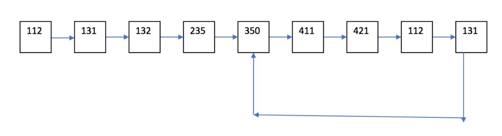
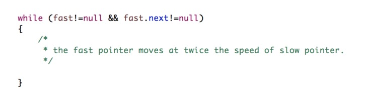

Lab 8
In this lab, you will write code to help you get familiar with loops in a linked list. Linked lists are a data structure that consist of a group of nodes which together represent a sequence. Until now, you have worked with lists that have references to the next element in a series.
In this lab, we will learn how to make a node point to some earlier node in the linked list, therefore creating a loop.
Let's start by saving this file (right click - save as). Then drag it into your labs project in Eclipse. You should end up with this:
What is a Linked List?
As mentioned above, linked lists are a data structure that are made of nodes that contain data of any type. They also keep a reference to another node, usually called next.
In the starter code, you will see a class called Node that has a constructor that initializes a node with some data (of type E) and another node next in the sequence. Also, in a linked list you can keep track of the head and the tail of the list.
Here is a great resource on LinkedLists
How do we create a linked list such that it has loops in it?
The main method has two linked lists: ll1 and ll2. One is made using createLinkedListWithNoLoops() and the other with createLinkedListWithLoops(). As per their names, the former returns
a linked list without loops, and the latter returns a list that has loops.
createLinkedListWithNoLoops()
Every time you call add with some data, it creates a new node and updates the new tail to be that node. Also, the old tail points to the new tail just added. For instance, when ”cs112” is added to the linked list, it becomes the head. The tail is also “cs112”, since no other node exists. Then, when “cs131” is added to the list, the new tail will be the “cs131” node, and the previous tail (“cs112”) will have “cs131” as its next. Hence, the nodes will be added in a linear way with head staying where it is and the pointers changing between the tails.
You can see this changing of next and how the link is created by tracing the code in public void add(data E).
createLinkedListWithLoops()
This linked list is created in a similar way. The “cs112” node points to “cs131” and the “cs131” node points to “cs132” and so on. The only reason this linked list is different is because both the “cs235” node and the “cs131” node created in the second-to-last spot point to a special “loop” node.

The resulting loop that will be created is shown in the figure below:

Part 1: add Method:
As you can see from the given code, there are two add methods, differentiated by the arguments that are taken as input(s). (Recall: this is called overloading). One of the methods takes only data of type E as an argument; and it makes a Node which gets added to the end of the linked list. The code for this is already provided to you. Make sure to study this code first before moving forward.
You are now asked to implement add method that takes a Node as an argument. This Node must get added to the end of the linked list. This is very similar to the other add, so make sure you understand that code. There should be an else-if statement to see if the linked list is empty or not–depending on the answer, you add this node in different ways. Think about why this is necessary!
Part 2: Get start of loop node method
Now, let us really have fun with this lab! Write a method that checks for any loops within a Linked List. If it does, you must return the Node that represents the start of the loop. If there is no loop, just return NULL. See the figure above for a linked list with a loop, and this loop begins on ‘350’.
This code contains two parts:
- Check if a loop exists. Use this algorithm:
- Initially start with two new nodes,
slowandfast, that are set to be the head of the linked list. This has been done for you in the code. - Go through the linked list in a
whileloop. Fast should move at twice the speed ofslow. For example, ifslowis moving to the next node,fastshould be going to the next of the next node. - If
fastends up equallingslow, then a loop exists, so set the appropriate Boolean to beTRUE. Also, break out of thewhileloop.
whileloop provided and shown in the figure below. Note: sincefastis moving at twice the speed, we need to check not only thatfastis notNULLbut also thatfast.nextis notNULL.This algorithm works because if there is a loop,fastwill come back and run intoslowat some point. However, if there is no loop,fastwill becomeNULLas it will reach the end of the linked list and exit thewhileloop. - Initially start with two new nodes,
- Now let us proceed to the next part of this method: if a loop exits, we need to find the start of it. Follow these steps to find the start of the loop:
- Reset the
slowpointer to the head of the linked list. Leavefastwhere it is. - Move both
slowandfastat the same speed (i.e. move them each to the next node). - The beginning of the loop is where
slowandfastmeet each other. Return this node. - Why does this work? Hint: The number of steps the slow pointer is equal to the number of fast pointer. i.e., If the slow pointer has travelled a total distance of k + l where k is the number of nodes before hitting the start of the loop, and l is the number of nodes inside the loop. And if the fast pointer has travelled a total distance of k + l + n where n is the total number of nodes inside the loop, then you know that the number of steps (not the distance) is equal! i.e.

- So if you move the slow pointer back to the head position of the linked list and make it travel k steps and make the fast pointer (do not change its position) travel n − l steps, which reall is k steps, both will meet at the start of the loop! Is’t this cool and awesome!? This is why we move the slow reference to the start of the linked list and do not change the position of the fast reference.
-
Here is another resource that attempts to explain it in a different way:

- Reset the
Before coding, try making a linked list with a loop on a piece of paper and trace these steps on it.
Once you've finished the code you can show a CA or TF to get marked for attendance!